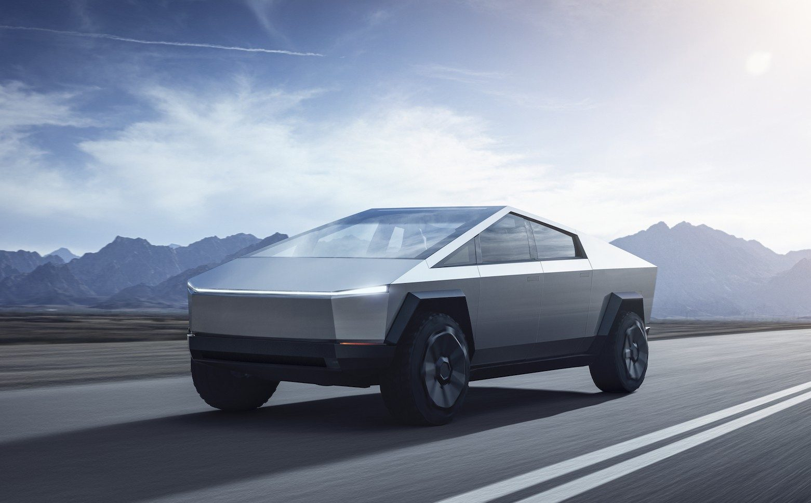

Cliquez sur un bouton pour changer la couleur du fond
Elon Musk
En effef, Tesla est depuis quelque années le premier constructeur mondial de voiture électrique.
| 2012 | 2015 | 2019 |
|---|---|---|
| 2 680 unités | 50 580 unités | 367 500 unités |
Tesla a commercialisé quatre modèles de voitures : le Roadster, la Model X, la Model S, la Model 3 et la Model Y. Prochainement, Tesla doit prodire un nouveau véhicule : un pick up. Le Cybertruck doit commencer sa carière commerciale en 2021 aux Etats-Unis et en 2022 en Europe.

La Tesla Model X

La Tesla Model 3

Interieur de la Model 3

Le Cybertruck
| Constructeur automobiles | Janvier à juin 2020 |
|---|---|
| Tesla : | 179 050 unités |
| Volkswagen : | 99 341 unités |
| BMW : | 93 758 unités |
| Renault-Nissan : | 84 501 unités |
| Hyundai-kia : | 63 731 unités |
| BYD : | 57 482 unités |
| Voitures | Janvier à juin 2020 |
|---|---|
| Tesla Model 3 : | 142 346 unités |
| Renault Zoé : | 37 154 unités |
| Nissan Leaf : | 23 867 unités |
| Volkswagen e-Golf : | 21 165 unités |
| BYD Qin : | 20 990 unités |
| BMW Série 5 PHEV : | 20 586 unités |
| Marchés | Janvier à juin 2020 |
|---|---|
| Europe : | 401 231 unités |
| Chine : | 360 110 unités |
| Etats-Unis d'Amérique : | 128 382 unités |
| Japon : | 14 500 unités |